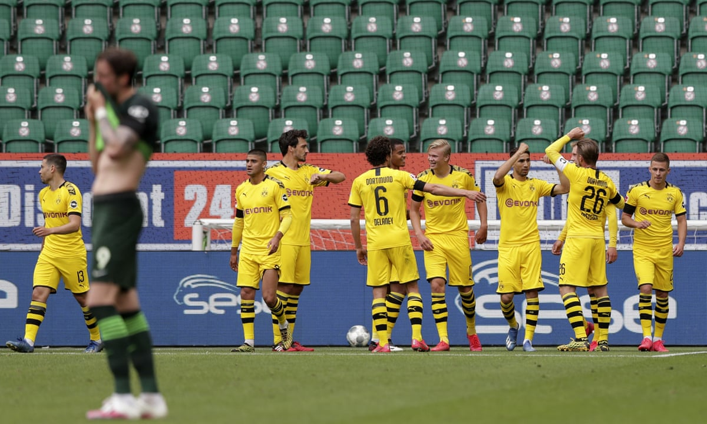

3. Quality over Quantity
One of Dortmund’s biggest strengths as a team is that they do not need chance after chance to find a way to get the ball in the back of the net. In fact, throughout this game they had very few chances. What makes Dortmund so dangerous is that they are clinical. They are comfortable controlling the ball in the midfield, not forcing anything offensively, and then taking advantage of defensive errors from the opposing team. In this game Dortmund’s two best chances were the two that ended up in the back of the net. This ability to patiently wait for openings and consistently finish them is something that Dortmund leverage throughout the Bundesliga and it is what makes their team strategy so unique.
4. Klaus Red Card
The result of the game was absolutely cemented when Felix Klaus of Wolfsburg received a red card in the 82nd minute. The decision was originally overlooked by the referee, but VAR was used to determine the sending off. The decision was controversial as Wolfsburg players argued that it was unintentional, but regardless Wolfsburg had played aggressively and received several warnings throughout the game, so it was really no surprise in the end that the red was given.

5. Haaland’s Space Creation
While young talisman Erling Haaland was not able to score yet another goal in this game, his influence off the ball was very apparent. Haaland’s presence in the box is one of his biggest strengths as he can draw several defenders on to him which creates space for other attackers in the box to receive crosses. In the first goal, two defenders in the box are attracted to Haaland which creates the space in the back for Guerreiro to finish the cross. We see a similar effect in the second goal where, during the counter-attack, Haaland’s presence in the center of the field attracts most of the defenders’ attention which opens up space on the right-wing for Hakimi to comfortably finish for Dortmund’s second. Overall, it is incredibly impressive how broad Haaland’s skill set is, especially at such a young age, and it will be exciting to see him get better and better from here.